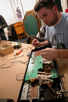
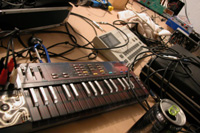
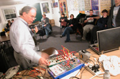

|
| Dorkbot.detroit 02 |
18 Feb 2005 |
| The second of Dorkbot.detroit's meetings focused on Circuit Bending and home made electronic instruments. Our event this was hosted at Green Brian Comics in Dearborn, MI (thanks Dan!). The evening began with Flint, MI based artist, Adam Mokan, introducing us to the basics of circuit bending as well as giving us a look inside some of his projects and showing us how they work. Adam then teamed up with Steev Thompson for a noise performance using their circuit bent instruments. Steve Curtin presented his ever growing project involving PLLs and PIC microprocessor based frequency generators. His performance then took the audience to the other end of the sound spectrum with his droned and layered audio.
Adam Mokan  Listen
to Adam and Steev's performance. Steev Thompson  Listen
to Adam and Steev's performance. Steven Curtin  Listen to Steve's performance.
These musicians have a unique bond with their instruments in that they have worked with them from the inside and ultimately have created the sound that is produced. Atheistically it was interesting to juxtapose Adam Mokan and Steev Thompson with Steve Curtin since the audio that both created were opposite ends of the performance spectrum. Both use the same basic electronic techniques to create their instruments, but the sounds that are produced go into very different realms.
|